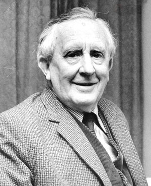

The Lord of the Rings is an epic high-fantasy novel written by English author
and scholar J. R. R. Tolkien. The story began as a sequel to Tolkien's 1937
fantasy novel The Hobbit, but eventually developed into a much larger
work. Written in stages between 1937 and 1949, The Lord of the Rings is
one of the best-selling novels ever written, with over 150 million copies
sold. Although generally known to readers as a trilogy, the work was initially
intended by Tolkien to be one volume of a two-volume set, the other to be
The Silmarillion, but this idea was dismissed by his publisher.For economic
reasons, The Lord of the Rings was published in three volumes over the
course of a year from 29 July 1954 to 20 October 1955. The three volumes
were titled The Fellowship of the Ring, The Two Towers and The Return of
the King.
Plot introduction
The narrative follows on from The Hobbit, in which the hobbit Bilbo Baggins finds the Ring, which had
been in the possession of the creature Gollum. The story begins in the Shire, where Frodo Baggins
inherits the Ring from Bilbo, his cousin and guardian. Neither hobbit is aware of the Ring's nature, but
Gandalf the Grey, a wizard and an old friend of Bilbo, suspects it to be the Ring lost by Sauron, the Dark
Lord, long ago. Seventeen years later, after Gandalf confirms this is true, he tells Frodo the history of
the Ring and counsels him to take it away from the Shire. Frodo sets out, accompanied by his gardener,
servant and friend, Samwise "Sam" Gamgee, and two cousins, Meriadoc "Merry" Brandybuck and
Peregrin "Pippin" Took. They are nearly caught by the Nazgûl, but shake off their pursuers by cutting
through the Old Forest. There they are aided by Tom Bombadil, a strange and merry fellow who lives
with his wife Goldberry in the forest.
Main Characters
Frodo - He inherits the One Ring form Bilbo and carries it as the Ring-bearer to the end of the
Quest. He sacrifices much of his innocence in the process.
Gandalf - He's the one who figures out what the One Ring is and sends Frodo on the journey.
He also accompanies him, offering wise advice and help until he duels with an ancient Balrog,
enabling the others to escape but dying in the fight.
Sam - He accompanies Frodo as a loyal companion for the entire journey, becoming his best
friend and essentially mothering him. Sometimes I suspect that their relationship is where the
word bromance came from.
Aragorn - He meets the Hobbits early in their journey and guides/guards them as they try to
escape the Nazgul. After the Fellowship disbands, he slowly goes through the steps he needs
to regain his rightful throne as king of Gondor, bringing his people leadership and hope.
Legolas - He is chosen by an Elvish leader to accompany Frodo and Co., so from then on he
quietly helps shoot Orcs and offers occasional sage advice and support. He also forms a close
friendship with the dwarf Gimli. 10 Things You Didn't Know About Legolas
Although The Lord of the Rings was published in the 1950s, Tolkien insisted that the One Ring was not
an allegory for the atomic bomb, nor were his works a strict allegory of any kind, but were open to
interpretation as the reader saw fit.
A few critics have found what they consider racial elements in the story, which are generally based
upon their views of how Tolkien's imagery depicts good and evil, characters' race (e.g. Elf, Dwarf,
Hobbit, Southron, Númenórean, Orc), and how the characters' race is seen as determining their
behaviour. On the contrary, counter-arguments note that race-focused critiques often omit relevant
textual evidence, cite imagery from adaptations rather than the work itself, ignore the absence of
evidence of racist attitudes or events in the author's personal life, and claim that the perception of
racism is itself a marginal view.
Author

John Ronald Reuel Tolkien
John Ronald Reuel Tolkien (3 January 1892 ‑ 2 September 1973) was an English writer, poet,
philologist, and academic. He was the author of the classic high fantasy works The Hobbit and The Lord
of the Rings. While many other authors had published works of fantasy before Tolkien, the great
success of The Hobbit and The Lord of the Rings led directly to a popular resurgence of the genre. This
has caused Tolkien to be popularly identified as the "father" of modern fantasy literature or, more
precisely, of high fantasy. In 2008, The Times ranked him sixth on a list of "The 50 greatest British
writers since 1945". Forbes ranked him the fifth top-earning "dead celebrity" in 2009.
The Prophecy is the first soundtrack of The Lord of the Rings: The Fellowship of the Ring Original Motion
Picture Soundtrack composed by Howard Shore.
Plot of the movie
In the Second Age of Middle-earth, the lords of Elves, Dwarves, and Men are given Rings of Power.
Unbeknownst to them, the Dark Lord Sauron forges the One Ring in Mount Doom, installing into it a
great part of his power to dominate the other Rings, so he might conquer Middle-earth. A final alliance
of men and elves battles Sauron's forces in Mordor, where Prince Isildur of Gondor severs Sauron's
finger, and the Ring with it, thereby destroying his physical form. With Sauron's first defeat, the Third
Age of Middle-earth begins. Unfortunately, the Ring's influence corrupts Isildur, who takes it for
himself. Isildur is later killed by Orcs, and the Ring is lost for 2,500 years, until it is found by Gollum,
who owns it for five centuries. The Ring is then found by a hobbit named Bilbo Baggins, who turns
invisible when he puts it on, but is unaware of its history.